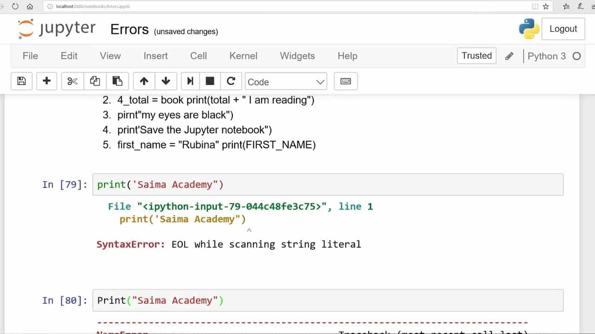
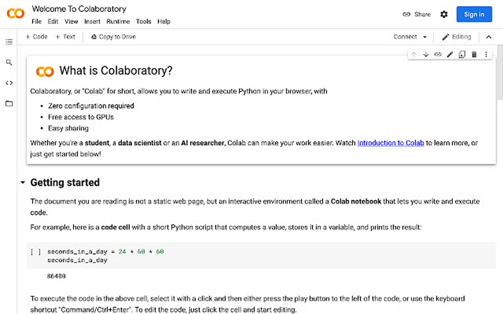
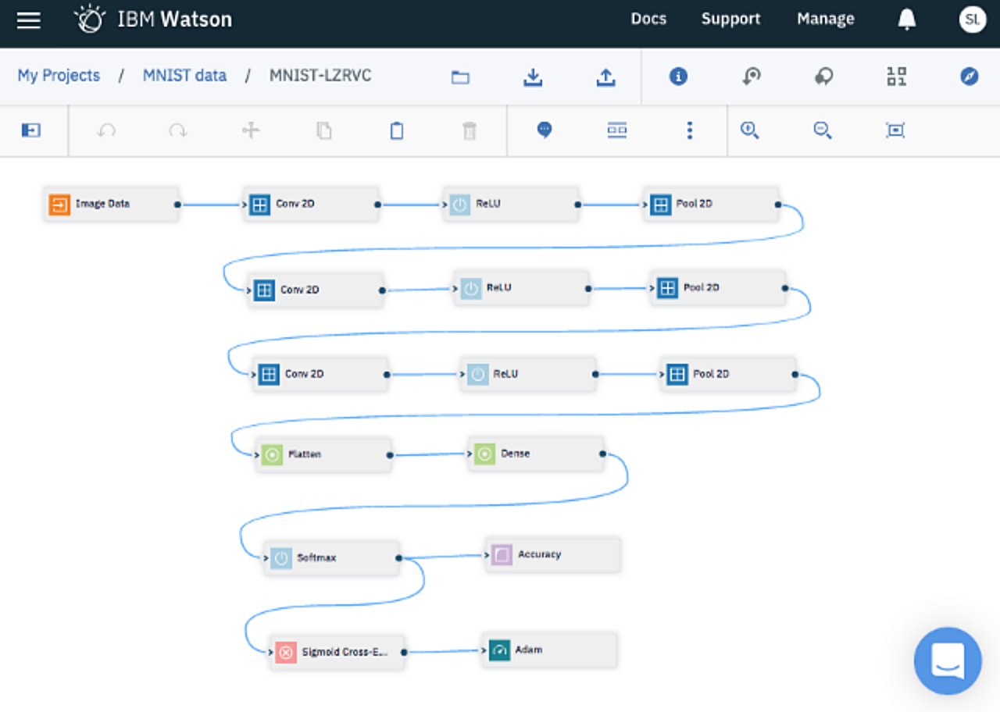
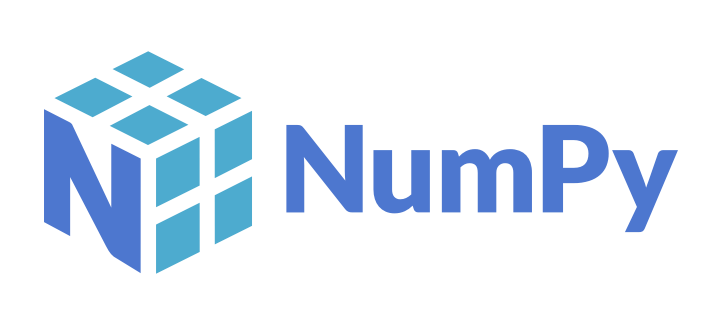
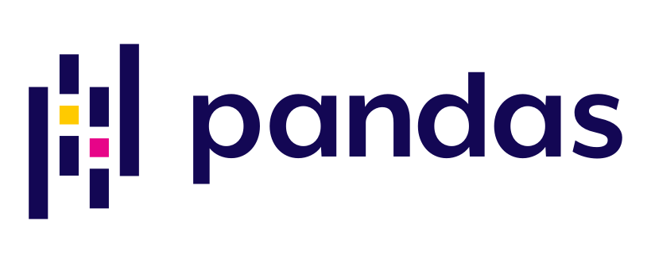
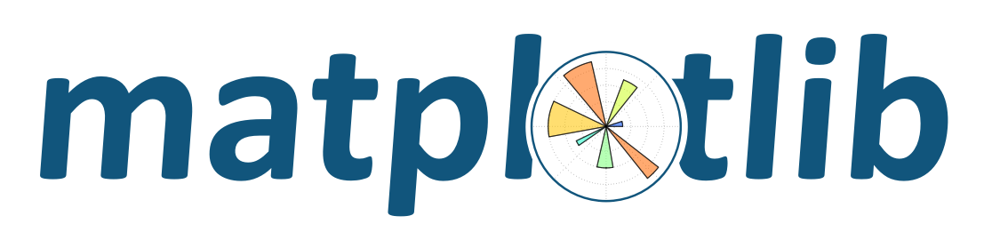
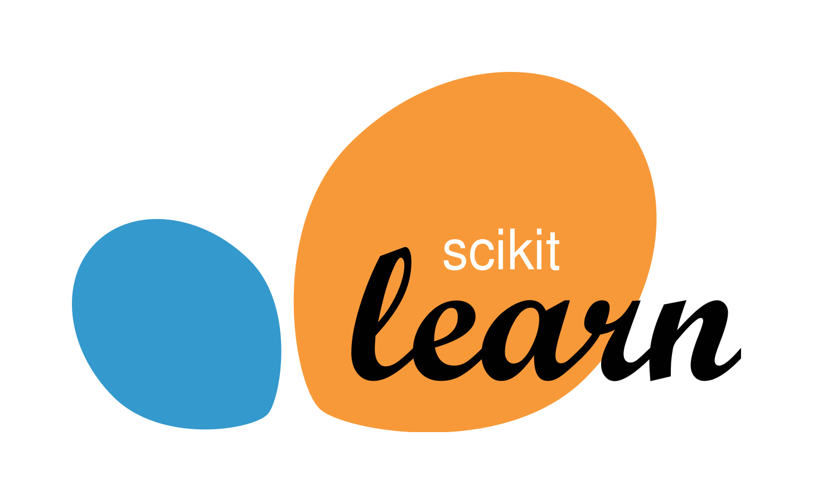

Jenis-jenis Machine Learning
Apa itu machine learning?
Menurut Arthur Samuel (1959), "A field of study that gives computers the ability to learn without being explicitly programmed." Machine learning adalah suatu cabang ilmu yang memberi komputer kemampuan untuk belajar tanpa diprogram secara eksplisit. Selain mahcine learning, pasti juga sering mendengar artificial intelligence dan deep learning. Machine learning merupakan cabang dari artificial intelligence secara lebih spesifik menggunakan metode statistik untuk mempelajari pola pada data. Dan deep learning merupakan cabang dari machine learning dengan algoritma jaringan syaraf tiruan yang dapat belajar dan beradaptasi terhadap sejumlah besar data.
1. Supervised Learning
Supervised learning adalah jenis machine learning yang menyertakan solusi yang diinginkan (biasa disebut label) dalam proses pembelajarannya. Dataset yang digunakan dalam pembelajaran model machine learning telah memiliki label jawaban dan algoritma untuk mempelajari pola dari pasangan data dan label tersebut.
2. Unsupervised Learning
Berbeda dengan supervised learning, pada unsupervised learning, dataset yang digunakan tidak memiliki label. Model machine learning melakukan proses pembelajaran secara mandiri untuk memberi label atau mengelompokkan data secara manual tanpa disediakan oleh manusia.
3. Semi-supervised Learning
Semi-supervised learning adalah jenis machine learning yang menggabungkan teknik supervised dan unsupervised learning. Dataset yang digunakan untuk melatih model machine learning sebagiannya sudah dilabeli oleh manusia, dan sebagian lagi tanpa label. Contohnya adalah pada Google Photos yang diberi label tag nama orang pada satu foto wajah tertentu, dan beberapa yang lain tidak.
4. Reinforcement Learning
Reinforcement learning merupakan metode pembelajaran model machine learning yang menggunakan sistem reward dan penalti. Reward akan diberikan kepada agen machine learning jika berhasil menyelesaikan tantangan atau permasalahan yang diberikan, sedangkan penalti akan diberikan ketika agen gagal untuk menyelesaikan tantangannya. Model reinforcement learning akan terus belajar untuk mendapatkan reward sebanyak mungkin, dan menghindari penalti.
Tools dalam Machine Learning
Python merupakan bahasa paling populer yang digunakan oleh para Data Scientist dan pengembang Machine Learning (ML). Keunggulan lain yang dimiliki Python adalah ia merupakan salah satu bahasa pemrograman yang mudah dipelajari karena sintaksnya sederhana.
Dalam mengembangkan sebuah model machine learning, dibutuhkan alat atau tools yang umumnya disebut Notebook. Notebook yang akan dibahas kali ini adalah berbasis web (web-based interactie development environtment). Dalam membuat program machine learning dengan Notebook ini, digunakan bahasa pemrograman Python. Anda dapat melihat referensi bahasa pemrograman Python pada laman resmi Python.
1. Jupyter Notebook

Jupyter Notebook merupakan perangkat lunak gratis, open-source, dan layanan web yang dapat digunakan untuk komputasi interaktif berbagai bahasa pemrograman, salah satunya Python. Jupyter Notebook dapat digunakan secara langsung dengan melakukan instalasi melalui panduan Install and Use Jupyter Notebook atau dapat digunakan langsung melalui browser pada Try Jupyter, lalu pilih Jupyter Notebook.
2. Google Colaboratory

Google Colaboratory atau sering disingkat Colab merupakan aplikasi yang memungkinkan kita untuk menulis dan mengeksekusi kode Python melalui browser. Ia sangat cocok digunakan untuk machine learning dan analisis data, serta sering digunakan oleh pemula. Untuk menggunakan Google Colab, dapat melalui tautan ini.
3. IBM Watson Studio

IBM Watson Studio merupakan salah satu layanan dari IBM yang banyak digunakan oleh analis dan ilmuwan data. Anda juga dapat menjalankan kode secara online pada layanan seperti IBM Watson Studio tanpa perlu meng-install perangkat lunak apapun pada komputer. Sebelum menggunakan IBM Watson Studio, buatlah akun IBM Cloud terlebih dahulu. Akun IBM Cloud dapat dipakai untuk mengakses IBM Watson Studio, IBM Watson Machine Learning, dan IBM Cloud. Untuk dapat menggunakan IBM Watson Studio, dapat melakukan registasi terlebihi dahulu melalui Sign Up for IBM Cloud, kemudian lakukan login ke IBM Cloud.
Library Populer dalam Machine Learning
Faktor lain yang membuat Python populer adalah lengkapnya library yang dapat dipakai pada pengembangan proyek machine learning dari awal sampai akhir. Python memiliki library untuk data loading, visualization, statistics, data processing, natural language processing, image processing, dan lain sebagainya.
Beberapa library yang memudahkan kita dalam mengerjakan proyek machine learning ditunjukkan dalam daftar berikut ini.
1. NumPy

NumPy sangat terkenal sebagai library untuk memproses larik atau array. Fungsi-fungsi kompleks di baliknya membuat Numpy sangat tangguh dalam memproses larik multidimensi dan matriks berukuran besar. Library ML seperti TensorFlow juga menggunakan Numpy untuk memproses tensor atau sebuah larik N dimensi.
2. Pandas

Pandas menjadi salah satu library favorit untuk analisis dan manipulasi data. Kenapa keduanya penting? Sebelum masuk ke tahap pengembangan model, data perlu diproses dan dibersihkan. Proses ini bahkan merupakan proses yang paling banyak memakan waktu dalam pengembangan proyek ML. Library pandas membuat pemrosesan dan pembersihan data menjadi lebih mudah.
3. Matplotlib

Matplotlib adalah sebuah library untuk membuat plot atau visualisasi data dalam 2 dimensi. Matplotlib mampu menghasilkan grafik dengan kualitas tinggi. Matplotlib dapat dipakai untuk membuat plot seperti histogram, scatter plot, grafik batang, pie chart, hanya dengan beberapa baris kode. Library ini sangat ramah pengguna.
4. Scikit Learn

Scikit Learn merupakan salah satu library ML yang sangat populer. Scikit Learn menyediakan banyak pilihan algoritma machine learning yang dapat langsung dipakai seperti klasifikasi, regresi, clustering, dimensionality reduction, dan pemrosesan data. Selain itu Scikit Learn juga dapat dipakai untuk analisis data.
5. TensorFlow

TensorFlow adalah framework open source untuk machine learning yang dikembangkan dan digunakan oleh Google. TensorFlow memudahkan pembuatan model ML bagi pemula maupun ahli. Ia dapat dipakai untuk deep learning, computer vision, pemrosesan bahasa alami (Natural Language Processing), serta reinforcement learning.
6. PyTorch
Dikembangkan oleh Facebook, PyTorch adalah library yang dapat dipakai untuk masalah ML, computer vision, hingga pemrosesan bahasa alami. Bersaing dengan TensorFlow khususnya sebagai framework machine learning, PyTorch lebih populer di kalangan akademisi dibanding TensorFlow. Namun dalam industri, TensorFlow lebih populer karena skalabilitasnya lebih baik dibanding PyTorch.
7. Keras
Keras adalah library deep learning yang luar biasa. Salah satu faktor yang membuat Keras sangat populer adalah penggunaannya yang minimalis dan simpel dalam mengembangkan deep learning. Keras dibangun di atas TensorFlow yang menjadikan Keras sebagai API dengan level lebih tinggi (Higher level API) dari TensorFlow sehingga antarmukanya lebih mudah dari TensorFlow. Keras sangat cocok untuk mengembangkan model deep learning dengan waktu yang lebih singkat atau untuk pembuatan prototipe.